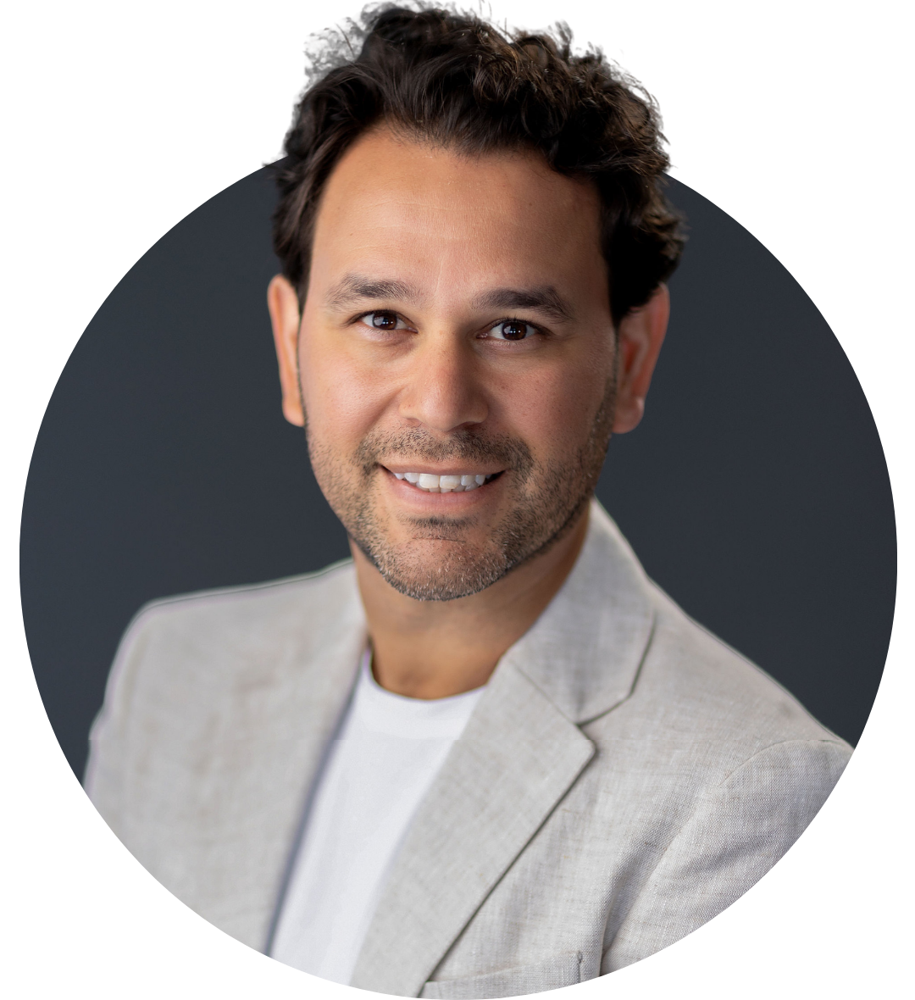

Rapidez no agendamento
Veja os horários disponíveis a qualquer hora do dia, sem precisar ligar antes para saber se tem vaga.
Beneficiários SulAmérica · Teleconsulta
Atendimento online com o Dr. Paulo Cardoso
Consulte a disponibilidade e faça seu pré-agendamento online, em poucos minutos, sem sair de casa.
Veja os horários disponíveis a qualquer hora do dia, sem precisar ligar antes para saber se tem vaga.
Converse com o cardiologista de onde estiver, sem deslocamento, trânsito ou sala de espera.
O mesmo cuidado e atenção de uma consulta presencial, com um cardiologista com mais de 20 anos de experiência.
Como funciona
Veja a agenda disponível 24 horas por dia e selecione o melhor dia e horário para você.
Informe nome, WhatsApp, e-mail e que você possui SulAmérica. Leva menos de um minuto.
A secretária valida seus dados junto à SulAmérica e confirma sua consulta pelo WhatsApp.
No horário marcado, você recebe o link e é atendido pelo Dr. Paulo Cardoso por videochamada.

Quem vai te atender
Médico cardiologista com mais de 20 anos de atuação em consultório e ambiente hospitalar, incluindo casos de alta complexidade. Formado em Clínica Médica e Cardiologia, acompanha pacientes com um olhar atento à prevenção e à qualidade de vida.
Agora também atende por teleconsulta, levando o mesmo cuidado de sempre até você, de onde estiver.
CRM 142290 SP · RQE 30259 · RQE 30037
Agendamento online
Selecione um horário disponível abaixo e preencha seus dados. É rápido e gratuito.
Prefere falar com alguém antes de agendar?
Prefiro falar com a secretáriaDúvidas frequentes
Sim. A consulta é 100% por videochamada (teleconsulta), com o mesmo cuidado e atenção de um atendimento presencial.
Sim. Este atendimento por teleconsulta é voltado especificamente para beneficiários do convênio SulAmérica.
Basta escolher um horário disponível na agenda online acima e informar seus dados básicos (nome, WhatsApp e e-mail). Leva menos de um minuto.
Ainda não. O que você faz na agenda é um pré-agendamento: nossa equipe valida seus dados junto à SulAmérica e confirma a consulta pelo WhatsApp.
Pelo WhatsApp. Após a validação dos seus dados, nossa equipe entra em contato para confirmar data e horário da sua teleconsulta.
No dia e horário confirmados, você recebe um link de videochamada. Basta clicar no horário marcado para iniciar a consulta com o Dr. Paulo Cardoso, de onde estiver.
Dr. Paulo Cardoso Cavalcanti Ferreira · Médico Cardiologista · CRM 142290 SP · RQE 30259 · RQE 30037.
Atendimento realizado por telemedicina, em conformidade com as normas do Conselho Federal de Medicina (CFM).
Seus dados são tratados com confidencialidade e utilizados exclusivamente para fins de agendamento e atendimento médico, em conformidade com a Lei Geral de Proteção de Dados (LGPD).